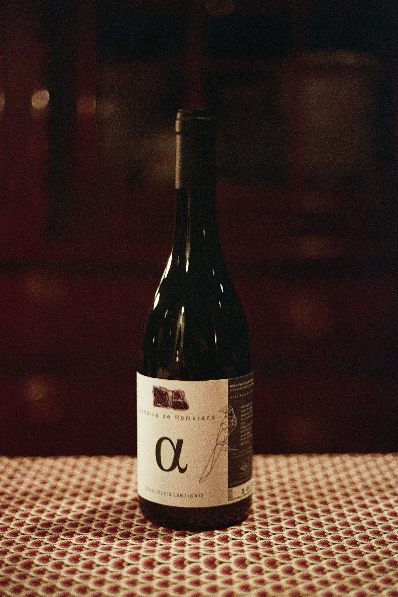

Domaine de Colette, Beaujolais Lantignié
2023 Prijs:€15.90
Domaine de Colette
Appellation: Beaujolais Lantignié
Vintage: 2023
FRUITIG & SOEPEL
Bodem:Granit rose
Aroma’s:Kers, rode besjes, framboos
Opvoeding:Beton
Bewaarpotentieel:3 - 4 jaar
Serveren:14 - 16°C
Alcohol:13
Prijs:€15.90
Toekomend bij Domaine de Colette zie je op de heuvel achter het gebouw de wijngaarden van deze cuvée liggen, zoals je op de tekening op de fles kan zien. Gelegen op zuid -zuidoostelijke gerichte granit rose helling worden deze druiven met de hand geplukt. Pierre Alexandre kiest voor zijn enige Lantigié-cuvée om geen sulfiet toe te voegen, de inheemse gisten te behouden en niet te filteren. De druiven gaan in gehele trossen de cuve in en ondergaan een week semi-carbonische gisting. Daarna rijpt de wijn nog zes maanden op beton. In de neus opent de wijn met een boeket van rood fruit, zoals kers, rode besjes en framboos, aangevuld met een lichte vegetale toets die een frisse dimensie geeft. De smaak is strak en fruitig, met heel zachte, bijna onmerkbare tannines. Dit maakt de wijn soepel en aangenaam om iets koeler te serveren (13–14°C). Een ideale zomerwijn: perfect voor een picknick, als aperitief, bij zomerse salades of geroosterde groenten. Een wijn die dus het best in zijn jeugdigheid gedronken wordt, maar zeker tot drie jaar kan bewaren.

Domaine les Vignes en M, Beaujolais Lantignié
Spes 2024 Prijs:€17.90
Domaine les Vignes en M
Appellation: Beaujolais Lantignié
Vintage: 2024
LICHT & FRUITIG
Bodem:Granit rose/pierre bleue
Aroma’s:rode bes, kers, aardbei
Opvoeding:Beton
Bewaarpotentieel:3 jaar
Serveren:14 - 16°C
Alcohol:12,5
Prijs:€17.90
‘Spes’ betekent hoop, en precies dat koestert Maxime voor zijn nieuwe project als wijnmaker. Deze cuvée is atypisch voor een rode wijn: hij is opvallend licht, bijna zonder tannine en met een frisse aciditeit. Een echte zomerwijn: soepel, fruitig en dankzij het gebrek aan tannine perfect om wat koeler te serveren. Ideaal voor warme, zonnige dagen op het terras of als aperitief maar kan ook geserveerd worden met salades en lichte groentenschotels. Volgens Maxime werkt het verrassend goed met citroentaart.

Domaine de La Roche, Beaujolais Lantignié
Le Fil Rouge 2023

Château des Vergers, Beaujolais Lantignié
Aux Vergers 2023

Domaine de Romarand, Beaujolais Lantignié
Mi 2023

Domaine de Romarand, Beaujolais Lantignié
Alpha 2023

Domaine Frédéric Berne, Beaujolais Lantignié
Aux Vergers 2023

Domaine de La Roche, Beaujolais Lantignié
La Croix Blanche 2020

Domaine les Capréoles, Beaujolais Lantignié
Alio Pacto 2023

Domaine les Capréoles, Regnié
Diaclase 2023